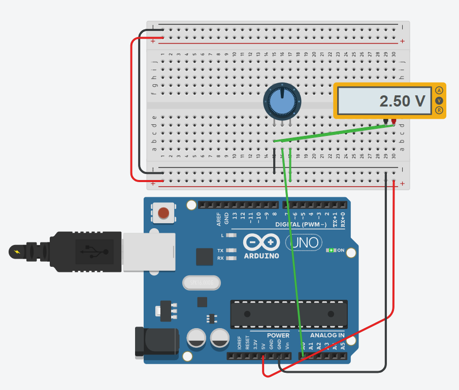

Аналоговий димер яскравості з потенціометром
Справжнє перетворення неперервного фізичного світу в цифрові біти. Навчіться зчитувати плавний поворот ручки резистора за допомогою 10-бітного АЦП (analogRead() 0..1023) та регулювати потужність світлодіода за допомогою таймерної широтно-імпульсної модуляції (analogWrite() 0..255).
💡 Як мікроконтролер обманює наші очі за допомогою ШІМ (PWM)?
У більшості мікроконтролерів (зокрема ATmega328P) немає справжнього цифро-аналогового перетворювача (ЦАП / DAC) — плата не вміє видавати справжні 2.5 Вольти. Натомість вивід D9 вмикає і вимикає повні 5 Вольт із шаленою швидкістю 490 разів на секунду (490 Гц). Якщо напруга подається половину часу (коефіцієнт заповнення 50%), людське око через інерцію зору сприймає це як рівне половинне світіння світлодіода!
Схеми підключення: Потенціометр та PWM-вивід

Центральна ніжка (повзунок / wiper) потенціометра підключена до аналогового входу A0, бічні виводи — до шин 5V та GND. Світлодіод підключено до PWM-піна D9.
Керуйте напругою та дивіться імпульси наживо
Покрутіть регулятор потенціометра та спостерігайте, як змінюється ширина імпульсів ШІМ та яскравість світлодіода
Чекліст деталей для складання
Arduino UNO R3
1 шт. • 10-біт АЦП (ADC)Аналоговий порт A0 з дискретизацією 1024 рівнів напруги (0–5В).
Потенціометр 10 кОм
1 шт. • Лінійний (B10K)Формує плавний подільник напруги від 0 до 5 Вольт на центральному виводі.
Світлодіод Blue (5мм)
1 шт. • Підключення до D9Вивід D9 позначений тильдою (~), що вказує на апаратну підтримку ШІМ таймером 1.
Резистор 220 Ом
1 шт. • СтрумообмежувачЗахищає кристал світлодіода при максимальному 100% коефіцієнті заповнення ШІМ.
Макетка та дроти
1 шт. • Без паяльникаДроти папа-папа для комутації живлення 5V, заземлення GND та сигналів.
Чому формулу map(val, 0, 1023, 0, 255) можна замінити на val / 4?
Вхідний аналого-цифровий перетворювач Arduino UNO є 10-бітним: він розбиває діапазон 0..5В на 2¹⁰ = 1024 дискретні сходинки (від 0 до 1023). Кожна сходинка дорівнює:
Роздільна здатність = 5.0 В / 1024 ≈ 0.00488 В (4.88 мілівольта)
Апаратний ШІМ таймера ATmega328P є 8-бітним: він приймає значення від 0 до 2⁸ - 1 = 255.
Оскільки 1024 / 256 = 4, цілочисельний поділ int pwmVal = sensorValue / 4; працює вдесятеро швидше за важку функцію map() і дає ідеальний результат!
Скетч плавного димера з виведенням у Serial Plotter
// SimpleArduino — Проєкт #04: Аналоговий димер яскравості з потенціометром (PWM)
// Читання 10-бітного АЦП та генерація 8-бітного ШІМ сигналу
const int POT_PIN = A0; // Аналоговий вхід для центрального виводу потенціометра
const int LED_PIN = 9; // ШІМ-вихід (позначений тильдою ~ на платі)
void setup() {
// Налаштовуємо цифровий пін як вихід для ШІМ
pinMode(LED_PIN, OUTPUT);
// Аналогові піни A0-A5 за замовчуванням налаштовані на вхід і не вимагають pinMode
Serial.begin(9600); // Відкриваємо послідовний порт для графіка Serial Plotter
}
void loop() {
// 1. Зчитуємо 10-бітне значення напруги (від 0 до 1023)
int sensorValue = analogRead(POT_PIN);
// 2. Перетворюємо діапазон 0..1023 в 8-бітний діапазон ШІМ 0..255
int brightness = sensorValue / 4;
// 3. Задаємо коефіцієнт заповнення ШІМ на піні D9
analogWrite(LED_PIN, brightness);
// 4. Виводимо значення у консоль для побудови графіка
Serial.print("ADC_Raw:");
Serial.print(sensorValue);
Serial.print(" PWM_Out:");
Serial.println(brightness);
delay(20); // Коротка пауза для плавності графіка
}Матриця типових несправностей
Світлодіод не регулюється плавно, а лише клацає ON/OFF
Ви підключили світлодіод до піна без підтримки апаратного ШІМ (наприклад, D2, D4, D7, D8). На платі UNO ШІМ підтримують тільки піни з тильдою (~): D3, D5, D6, D9, D10, D11.
Значення АЦП хаотично стрибають від 0 до 1023
Потенціометр погано зафіксований у макетній платі або центральна ніжка не контактує з роз'ємом A0. Аналоговий вхід опинився у стані «зависання» і ловить наведення електромережі 50 Гц.
При повороті регулятора плата Arduino вимикається (гаснуть лампи)
Небезпечно! Коротке замикання! Ви переплутали ніжки потенціометра і підключили живлення 5V та GND до центрального виводу і одного з крайніх. При крайньому положенні ручки 5V замикається напряму на GND.
Світлодіод світиться у крайньому положенні, але гасне одразу
Використано логарифмічний потенціометр (маркування «А») замість лінійного («В»). Для датчиків слід завжди обирати лінійні потенціометри B10K або B50K.
Перевірте себе: яка фізична напруга присутня на піні при analogWrite(9, 128)?
Оберіть єдину фізично правильну відповідь щодо природи сигналу ШІМ (PWM):